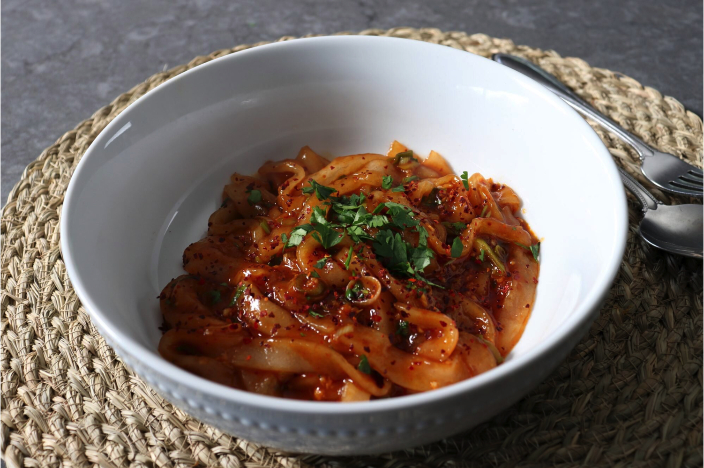

Home
Spicy Garlic Potato Noodles

Savory Spicy Garlic Potato Noodles
Ingredients
- 1 cup potato starch
- 1/4 teaspoon kosher salt
- 1 teaspoon vegetable oil
- 3/4 cup boiling water
Steps
-
Combine 1 cup potato starch, salt, and vegetable oil in a bowl.
Add a splash of boiling water at a time, stirring between additions,
until you get a perfectly textured dough.
-
Transfer to a work surface dusted with a little potato starch. Working
quickly while the dough is still warm, knead, adding more potato starch if necessary,
until smooth and elastic.
-
Bring a large pot of lightly salted water to a boil. Set out a large bowl of cold water.
-
While the water is boiling, roll dough to a thickness of 1/8 inch. Cut into 1/4-inch noodles with a pizza cutter. Separate noodles.
-
Add potato noodles (in batches if desired) and cook until they float, about 1 minute. Transfer to the bowl of cold water. Repeat to cook remaining noodles.
-
Whisk oyster sauce, soy sauce, rice vinegar, ketchup, sesame oil, sugar, and Sriracha together in a bowl.